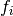

LearningCurveAppMainGUI
Running this module as __main__ starts the application main GUI
Created on Wed Jan 27 16:24:00 2016
@author: Joseph R. Cole
-
class LearningCurveAppMainGUI.LearningCurveAppMainGUI(root, **params)[source]
Design and logic for the Tkinter based main GUI of the learning curve application
-
CloseDB()[source]
Forgets the path the database currently in use. Should not need to actually close the connection
because the connection should not be held open by any thread (that would block the database from
other threads).
-
DefineButtons(parent=None)[source]
Define Go and Stop buttons
parent - a reference to a parent frame
-
DefineInputTable(parent=None)[source]
Initialize the left plane of the GUI
primarily entry boxes and drop down lists to control which machine learning solutions to test
parent - a reference to the frame of the main GUI
-
DefineMenuBar(parent=None)[source]
Define the menu bar for the main GUI including file, edit, and help menus
Set the commands for callbacks when any of the available options is selected
parent - a reference to the frame of the main GUI
-
DefinePlotCanvas(parent=None)[source]
Initialize the matplotlib canvas for plotting
parent - a reference to a parent frame
-
DefinePlotTools(canvas, parent=None)[source]
Define the zoom and pan tools for the learning curve plot
parent - a reference to a parent frame
-
DefineXSecButton(parent=None)[source]
Define a button to toggle the plot between a learning curve and a cross section of curves where
the x-axis becomes the cost or regularization values tried. This is connected to self.watchlist[0]
parent - a reference to a parent frame
-
GetCostList()[source]
Return the value form the cost list entry box widget after checking for errors.
The user should input a comma separated list of non-negative floats
-
GetCostSelect()[source]
Return the value of the current cost selection as a float
-
GetMaxTraining()[source]
Return the value form the max training samples entry box widget after checking for errors
-
GetStep()[source]
Return the value form the step entry box widget after checking for errors
-
GetWordLists(filename)[source]
Return a list of database tables with the feature vector word lists
filename - a path to the current database in use (usually self.DBpath)
-
Go(_=None)[source]
Starts the CPU heavy thread that is used to train the algorithm instances based on user input from the GUI.
The first action must be to acquire the PauseLock. The thread itself must release the PauseLock when it
finishes.
_ is an unused input that would contain metadata about a triggering event if this function is used as a widget’s .bind() method
-
NewCostMax(NewCMax)[source]
Updates the maximum cost watch variable for the PlotWorker() thread. Sends the graph state change
signal if necessary depending on the state of the cross section button in the main GUI
NewCMax - a float to set as the new value of the maximum cost watch variable
-
NewCostSelect(*_)[source]
Updates the cost selection watch variable according to the user selection in the cost list drop down
menu. Triggers a graph state change signal if necessary depending on the state of the cross section
button in the main GUI.
_ is a list of arguments that may be automatically provided because this function is used as a callback for a trace on a Tkinter StringVar. However, the data is not used in this function for anything.
-
NewDB()[source]
Ask for a filename to create a new database file, then create a new database and initialize
the required tables.
-
NewMaxSamps(*_)[source]
Updates the cost selection watch variable according to the user selection in the cost list drop down
menu. Triggers a graph state change signal if necessary depending on the state of the cross section
button in the main GUI.
_ is a list of arguments that may be automatically provided because this function is used as a
callback for a trace on a Tkinter StringVar. However, the data is not used in this function
for anything.
-
OpenDB()[source]
Open a feature vector database file, extract the available word lists that feature vectors can be
created against, and populate the word list drop down menu
-
PrepareExit()[source]
Clean up and close the GUI
-
StartPlotWorker()[source]
Start the thread that monitors the PlotDataQ and continuously updates the plot
-
ToggleXSec()[source]
Toggles the state of the plot between a learning curve and a cross section of learning curves with
different cost/regularization values. Sends a graph state change signal to the PlotWorker thread.
-
UpdateCostList(_=None)[source]
Update the drop down menu that is used to select the learning curve for the selected cost.
Trigger a graph state change event if necessary.
_ is an unused input that would contain metadata about a triggering event if this function is used as a widget’s .bind() method
-
UpdateWordListDropDown(NewList)[source]
Updates the values available in the word list drop down menu.
The user should select the word list to create feature vectors against
NewList - a list of tuples to define entrys for the word list drop down menu. Each tuple is:
(“table name in the database for the word list”,”a human readable name for the word list”)
-
__init__(root, **params)[source]
Initialize the main GUI and shared variables for other threads.
root - a parent object from Tkinter in which to draw the main GUI
- params - a dict() that allow the user to pass in parameters
- params[‘sqlpath’] -
- path to a json file with SQL commands for the main database
- params[‘pragmapath’] -
- path to a json file with PRAGMA commands for the main database
- params[‘tempsqlpath’] -
- path to a json file with SQL commands for a temporary database
- params[‘initialdir’] -
- a directory in which to start looking for a database file
- variables shared between threads -
- self.watchlock -
- a lock to protect variables watched by the PlotWorker thread
- self.watchlist -
a list of values watched by the PlotWorker thread to control the state of the Plot
all communication with the thread is accomplished by putting values on the PlotDataQ
- self.watchlist[0] -
- switches the plot x-axis between # training samples (false) and
the cost or regularization parameters tried (true)
- self.watchlist[1][0] -
- location where a learning curve cross section is shown when watchlist[0] is true
- self.watchlist[1][1] -
- maximum extent of the # of training samples axis if watchlist[0] is false
- self.watchlist[2][0] -
- cost or regularization value for the displayed learning curve when watchlist[0] is false
- self.watchlist[2][1] -
- maximum extent of the cost/regularization axis if watchlist[0] is true
- self.datastore -
- a list of data tuples with the scores of trained solutions to be plotted as
learning curves
- self.PlotDataQ -
- a Queue to use for interacting with the PlotWorker thread
contains ‘None’ signal to indicate a change of graph state, or
contains a data tuple with: (MachineLearningObject, NumberOfTrainingSamplesUsed, CostUsed, TrainingScore, CrossValidationScore)
- self.DBpath -
- path to the current feature vector database
- self.PauseLock -
- A lock to prevent multiple CPU heavy threads from starting at once.
all CPU heavy threads must be given this lock in the acquired state,
releae the lock at the end of computations, and provide a stopping function
to be attached to the Stop button in the GUI
EmailSamplesDB
Running this module as __main__ creates a feature vector database without using a GUI
Created on Tue Feb 09 16:03:00 2016
@author: Joseph R. Cole
-
class EmailSamplesDB.EmailSamplesDB(sqlcmdpath, pragmacmdpath, tempsqlcmdpath, **params)[source]
Controls the connection to the feature vector database. In the future this will be implemented more
generically to serve as a base class that provides the interface to the LearningCurveAppMainGUI. A
developer could then inherit from this class to connect to any given feature vector database. Currently,
this class works with the email/spam feature vector database used in the tutorial. All SQL commands are
placed in an external JSON file so that the queries do not need to be hard coded.
-
AddToDB(dirpath, classname, samp_distr_targ)[source]
Add new sample emails to a database. No processing of the emails is done except to attempt
conversion to utf-8.
- dirpath -
- a path to a directory of email files to add to the database
- classname -
- a reference to the class of the samples in the given directory (legitimate email or spam)
- samp_distr_targ -
- a tuple containing the desired fraction of samples assigned to each set (training,cross
validation,test). New samples are distributed to optimally match this desired distribution
based on the number of new samples provided and the current distribution between sets of
samples already in the database. Each value in the tuple should be in the range [0,1], and
the total of all values in the tuple should be 1.
-
AssignSamplesToSets(NumNewSamples, samp_distr_targ)[source]
Create set assignments for a number of new samples to be added to the database (training, cross validation, or test)
- NumNewSamples -
- the number of new samples to add; a set assignment will be made for each new sample
- samp_distr_targ -
- a tuple containing the desired fraction of samples assigned to each set (training,cross
validation,test). New samples are distributed to optimally match this desired distribution
based on the number of new samples provided and the current distribution between sets of
samples already in the database. Each value in the tuple should be in the range [0,1], and
the total of all values in the tuple should be 1.
- Return values:
- SetAssignmentList - a list of set assignments for each new sample; len(SetAssignmentList) == NumNewSamples
-
ConnectDB(DBpath)[source]
Setup a connection to an sqlite3 feature vector database file. Remember to close immediately
once your read or write is complete or other threads won’t be able to use the database.
DBpath - path to the database file to connect
-
ConnectDBblk(DBpath)[source]
Setup a connection to an sqlite3 feature vector database file. Remember to close immediately
once your read or write is complete or other threads won’t be able to use the database. This
is the same as ConnectDB() except that it blocks the thread and waits for the lock to be
released if the database is in use.
DBpath - path to the database file to connect
-
CreateDB()[source]
Initialize the tables for a new database file.
-
CreateDict(readable_name)[source]
Add a new dictionary table to the database.
readable_name - a human readable name to assign to the table that is saved alongside the automatically
generated name used in the database
-
CreateWordList(readable_name, DictRef)[source]
Add a new word list table to the database.
readable_name - a human readable name to assign to the table that is saved alongside the automatically
generated name used in the database
DictRef - a reference to the dictionary table in the database from which the words in this list are
taken
-
DisconnectDB()[source]
Disconnect a database and release the lock.
-
GetAvailableWordLists()[source]
Return the word lists available in the database
- Return values:
- WordLists - a list of tuples with the available wordlists in the database where the SQL query
used controls the order of items in the tuple
-
GetSampleCount()[source]
Return the number of samples in the database
- Return values:
- CurSampleCount - integer number of samples in the database
-
GetSampleDistribution()[source]
Return the fraction of samples in the database assigned to each set (training,cross validation,test)
- Return values:
- SetIDs - a list of the primary keys assigned to the sets in the database
SetDistr - a list of the fractions of samples assigned to each set
-
GetTrainSampleCount()[source]
Return the number of samples in the training set
- Return values:
- CurSampleCount - integer number of samples in the training set
-
GetXY(WordListRef, SetID, Limit=None, Offset=0)[source]
Return feature vectors and their classes. The order is controlled by the SQL query used, and there
is a value saved along with each sample to help randomize the mixture of classes returned.
- WordListRef -
- a reference to the word list table to save
- SetID -
- the primary key assigned to the set in the database for the requested feature vectors
- Limit -
- optional positive integer parameter to limit the number of feature vectors returned
- Offset -
- optional non-negative integer parameter to skip some number of feature vectors in the
database. If Limit is None then Offset is forced to be 0 regardless of the value provided.
- Return values:
- X - a list of the requested feature vectors
Y - a list of the classes associated with the returned feature vectors
-
LoadWords(FileName)[source]
Load a list of words from a plain text file. Each word should be on its own line. Then
create a dictionary table and a word list table in the database using these words.
FileName - the name (full path) of the file to load
-
MakeFeatureVecs(WordListRef, sqlcmdname)[source]
Create feature vectors against a given word list. Uses a FeatureVecGen object as an engine for
creating the feature vector given an email sample body.
- WordListRef -
- a reference to the word list table to save
- sqlcmdname -
- this parameter is a key to the SQLCMD dictionary so the user can update the SQL query used
to select samples for which to create feature vectors. Typical usage would be to SELECT
all the available samples in the database for all classes.
-
ResetDB()[source]
Delete all the tables in a database.
-
static TargetDistrObj(x, t, newsamps, oldsamps, oldsetcounts)[source]
Implements the equation to optimize for calculating how to distribute a given number of new samples between sets
where
is the sample distribution sum of squares error
is the targeted fractional distribution of samples to set i
 is the resulting fractional distribution of samples from a proposal to add a number of new samples to set i
and iterates over (training, cross validation, and test) sets
- t -
- tuple of targeted distribution fractions; each value must be in the range [0,1] and the total must = 1
- newsamps -
- the total number of new samples to add to the database (integer)
- oldsamps -
- the total number of samples already in the database (integer)
- oldsetcounts -
- tuple of the (integer) counts of samples in each set for samples already in the database
- newtotal -
- the total number of samples that will be in the database once the new ones are added (integer)
- Return values:
- error - the sum of squares error between the targeted sample distribution and the proposed sample distribution
-
UpdateDict(DictRef, sqlcmdname)[source]
Process samples in the training set to update a dictionary with words and their frequency of
occurance.
- DictRef -
- a reference to the dictionary table in the database from which the words in this list are
taken
- sqlcmdname -
- if calls to AddToDB() and UpdateDict() are interleaved, it is up to the SQL query used to
make sure that an email sample is not double counted in the dictionary histogram. This
parameter is a key to the SQLCMD dictionary so the user can update the SQL query used.
Samples used to create a dictionary are tracked in a separate table in the database.
-
UpdateWordList(WordListRef, WordFilter=True)[source]
Update a word list whenever a dictionary has been changed. Word lists are connected to specific
dictionaries internally in the database, so it is not necessary to provide a dictionary reference.
- WordListRef -
- a reference to the word list table to save
- WordFilter -
- allows the user to control whether words in the dictionary should be excluded from
the list based on parameters provided as class attributes (True) or all words in the
dictionary should be added to the list (False)
-
WriteWords(WordListRef, FileName)[source]
Save a word list from the database out to a text file.
WordListRef - a reference to the word list table to save
FileName - the name (full path) of the file to save
-
__init__(sqlcmdpath, pragmacmdpath, tempsqlcmdpath, **params)[source]
Load external data and parameters in preparation to work with a feature vector database.
- sqlcmdpath -
- json file with SQL commands for queries on the sqlite3 database
- pragmacmdpath -
- json file with PRAGMA commands for initializing the sqlite3 database
- tempsqlcmdpath -
- json file with SQL commands for queries on a temporary database when it is necessary to
read data/process it/write data back to the main database (using multiple cursors at the
same time doesn’t seem to be supported in sqlite3)
- params -
a dict() with parameters controlling creation of feature vectors and other configurable options
- params[‘CommitFreq’] -
- number of writes to add to the database journal before a commit when doing large blocks of writes
- params[‘TempDBCMDs’] -
- stores the tempsqlcmdpath for use with the temporary database when needed
- params[‘MinCountFrac’] -
- Used for creating the words lists against which feature vectors are created.
Minimum frequency of word occurance in the training set before the word is included in the word list
(specified as a fraction of the total number of words in the training set)
- params[‘MaxCountFrac’] -
- Used for creating the words lists against which feature vectors are created.
Maximum frequency of word occurance in the training set allowing the word to be included in the word list
(specified as a fraction of the total number of words in the training set)
- shared class variables -
self.DB_Connect - the sqlite database connection object
self.DB_Cursor - the sqlite database cursor object
self.DBpath - path to the current database file in use
self.DBlock - a lock on the database preventing other threads from accessing it
self.SQLCMDs - dict() containing all the available SQL commands
self.DBSetup - dict() containing all the available PRAGMA commands
PlotWorker
This module implements a class derived from the Thread class in the threading module to encapsulate the
execution of the PlotWorker thread.
Created on Wed Feb 24 15:39:00 2016
@author: JCole119213
-
class PlotWorker.PlotWorker(PlotDataQ, datastore, ax, watchlist, watchlock)[source]
-
DoLineAnimation()[source]
Animate the plot lines with the data saved in self.xdata, self.ytdata, and self.ycvdata
- internal variables -
- self.xdata -
- x coordinates of the data to plot
- self.ytdata -
- y coordinates of the data to plot for the training score line
- self.ycvdata -
- y coordinate of the data to plot for the cross validation score line
-
PullDataFromStore(**kwargs)[source]
Updates the data plotted by the PlotWorker with the latest data from the datastore
kwargs - a dict() to overwrite default values of gstate
- internal variables -
- gstate -
- the current state of the graph (what is on the x axis and which learning curve or
cross section is shown)
- self.xdata -
- x coordinates of the data to plot
- self.ytdata -
- y coordinates of the data to plot for the training score line
- self.ycvdata -
- y coordinate of the data to plot for the cross validation score line
-
UpdateAxisLimits()[source]
Update the static elements of the plot (x and y axis, etc.) when a graph state change signal is caught
-
__init__(PlotDataQ, datastore, ax, watchlist, watchlock)[source]
Initialize references to variables shared with the main thread of execution in the LearningCurveApp
module
- variables shared between threads -
- self.PlotDataQ -
- a Queue to use for interacting with the main thread
- contains ‘None’ signal to indicate a change of graph state, or
contains a data tuple with: (MachineLearningObject, NumberOfTrainingSamplesUsed, CostUsed, TrainingScore, CrossValidationScore)
- self.datastore -
- a list of data tuples with the scores of trained solutions to be plotted as
learning curves
- self.ax -
- a reference to the matplotlib axes in the main GUI (where this thread will plot data)
- self.watchlist -
a list of values updated by the main thread to control the state of the plot.
All communication between threads is accomplished by putting values on the PlotDataQ (None indicates the watchlist changed)
- self.watchlist[0] -
- switches the plot x-axis between # training samples (false) and
the cost or regularization parameters tried (true)
- self.watchlist[1][0] -
- location where a learning curve cross section is shown when watchlist[0] is true
- self.watchlist[1][1] -
- maximum extent of the # of training samples axis if watchlist[0] is false
- self.watchlist[2][0] -
- cost or regularization value for the displayed learning curve when watchlist[0] is false
- self.watchlist[2][1] -
- maximum extent of the cost/regularization axis if watchlist[0] is true
- self.watchlock -
- a lock to protect variables watched by the PlotWorker thread
- Parameters:
- self.params[‘RedrawDelay’] -
- parameter to control the sleep time between redrawing the axes animating the graph lines; this
is needed because matplotlib is not technically thread safe
-
getIndexOfTuple(val1, val2)[source]
Returns the index of the datatuple that matches the input values provided. This is a worker function
used when adding new data to the datastore to avoid adding multiple instances of the same data.
- val1 -
- number of training samples used to train the solution taken from the PlotDataQ
- val2 -
- cost or regularization value used when training the solution taken from the PlotDataQ
- Return values:
- pos or lendata-1 - the index in the datastore of the data tuple matching the provided values
-
init_plot()[source]
Setup the plot for the first time (runs with this thread is first started). Sets a callback executed
when a draw event occurs to store the background of the plot.
- internal variables -
- self.xdata -
- x coordinates of the data to plot
- self.ytdata -
- y coordinates of the data to plot for the training score line
- self.ycvdata -
- y coordinate of the data to plot for the cross validation score line
-
run()[source]
Main execution loop for the PlotWorker thread; called when the main thread of execution starts
this thread. Blocks until data or a ‘None’ signal it put on the PlotDataQ from outside.
-
update_background(_=None)[source]
Store the plot background (all the static elements) for more efficient line animations on top
_ is an unused argument that is automatically passed to the function when it is used as a draw event
based binding containing information about the triggering event (see init_plot())
TrainSVM
This module implements a class derived from the Thread class in the threading module to encapsulate the
execution of the SVM training thread. It uses an implementation of LibSVM from scikit-learn.
Created on Wed Feb 24 15:39:00 2016
@author: JCole119213
-
class TrainSVMs.TrainSVMs(DBobj, DBpath, PauseRef, PauseLock, PlotDataQ, **params)[source]
-
__init__(DBobj, DBpath, PauseRef, PauseLock, PlotDataQ, **params)[source]
Initialize references to variables shared with the main thread of execution in the LearningCurveApp
module
- variables shared between threads -
- self.DBobj -
- a reference to the EmailSamplesDB object
- self.DBpath -
- the full path to the sqlite3 feature vector database file
- self.PauseRef -
- a reference to the Tkinter Stop button widget in the main GUI (needs to be configured with command=None on exit)
- self.PauseLock -
- a threading.Lock object that must be released on exit
- self.PlotDataQ -
- a Queue to use for interacting with the main thread
- this thread puts a data tuple with: (MachineLearningObject, NumberOfTrainingSamplesUsed, CostUsed, TrainingScore, CrossValidationScore)
- Parameters:
- self.ParamSpace -
default parameters are overwritten by the params dictionary passed in to the constructor; these
define the parameter space of SVMs the user wishes to explore
- self.ParamSpace[‘Step’] -
- the step size (number of training samples) to add for each new point of the learning curve
- self.ParamSpace[‘MaxTraining’] -
- the maximum number of training samples to use for training an SVM (last point on the learning curve).
If the provided value is higher than the number of training samples available in the database,
the lower limit is automatically used.
- self.ParamSpace[‘WordList’] -
- controls which feature vectors to select from the database, as the features could be generated
against different word lists
- self.ParamSpace[‘Costs’] -
- a list of floats with the cost values to try when training the SVMs
-
run()[source]
The main loop for the TrainSVMs thread; trains an SVM for each point in the parameter space the
user wishes to explore. Data is passed outside by putting it on the PlotDataQ. Periodic calls
to self.verifygo() are used to make sure the user still wants to continue. In this version it is
not possible to stop the thread until the current SVM finishes training, which could cause slow
stopping response for large datasets.
Note that this thread holds the lock on the feature vector database for its entire execution so
the database is guaranteed not to change while it’s running. The final actions of this thread are
to release the database lock by closing the connection, deactivate the callback of the Stop button
widget in the main GUI, and release the PauseLock for CPU heavy threads.
-
stop()[source]
This thread is stoppable from the main thread of execution by calling this function
-
stopped()[source]
Utility function to check if the stop signal was sent.
-
verifygo()[source]
Raises an exception if the stop signal was sent.
FeatureVecGen
Contains a class to generate feature vectors from email text. Utility functions are also included for
creating the dictionaries needed to build the feature vectors. Uses the Porter stemmer algorithm
as implemented in the natural language processing toolkit (nltk).
Created on Fri Feb 12 13:35:00 2016
@author: JCole119213
-
class FeatureVecGen.FeatureVecGen(DictList)[source]
-
HashDict(DictList)[source]
Creates a hash to determine the presence of a word in the dictionary and the corresponding feature location
- DictList -
- a list of strings (words) from a dictionary, used to build the feature vectors
-
MakeVec(SampleBody)[source]
Implements the full flow of creating a feature vector from the raw string extracted from an email
- SampleBody -
- unprocessed text from the body of an email message
- Return values:
- featurevec -
- a list of integers (actually only 0 or 1, but stored as int) indicating the absence or
presence in SampleBody of each dictionary word from self.DictHash
-
MarkWordPresence(EmailContentsReg)[source]
Create a feature vector from the regularized text of an email message body
- EmailContentsReg -
- a list of strings (words) after processing by the FeatureVecGen.RegularizeWords() method
- Return values:
- FeatureVec -
- a list of integers (actually only 0 or 1, but stored as int) indicating the absence or
presence in EmailContentsReg of each dictionary word from self.DictHash
-
classmethod ParetoWords(TextToProcess)[source]
Creates a dictionary with a count of all words in the text to be processed
- TextToProcess -
- unprocessed text from the body of an email message
- Return values:
- DictHist -
- a Python dictionary where the value associated with each key (regularized, stemmed words) is
a count of the number of times that word occurred in TextToProcess
-
static RegularizeWords(FileStr)[source]
Removes email addresses, punctuation, HTML tags, etc.
- FileStr -
- unprocessed text from the body of an email message
- Return values:
- FileWords -
- a list of stings split by punctuation and filtered from 0 length strings
-
static StemWords(WordList)[source]
Extracts the root of a word (e.g. stepped -> step) using the Porter stemmer algorithm
- WordList -
- a list of strings (words) as processed by the FeatureVecGen.RegularizeWords() method
- Return values:
- StemmedWordList - a list of root words from the input list
-
__init__(DictList)[source]
Initialize the feature vector creation engine with a list of words from a dictionary.
- DictList -
- a list of strings (words) from a dictionary, used to build the feature vectors
TempDB
Creates a temporary database using the system’s temporary file infrastructure. This is useful when it is
necessary to maintain multiple data cursors in a database because a temporary copy of a given table can
be made. Both database connections (the persistent and the temporary ones) can then be open at the same
time - one for reading and one for writing.
Created on Tue Feb 09 16:03:00 2016
@author: Joseph R. Cole
-
class TempDB.TempDB(sqlcmdpath)[source]
Controls the connection to a temporary database. All SQL commands are
placed in an external JSON file so that the queries do not need to be hard coded.
-
ConnectDB()[source]
Connect to the temporary database and setup a database cursor
-
CreateDB()[source]
Creates a temporary file to use for the database; similar to the unix touch command. The
full path to the temporary file is saved in self.DBpath
-
DisconnectDB()[source]
Disconnect the temporary database
-
RunCommand(sqlstr, params=(), commit=True)[source]
Executes an SQL query against the temporary database
- sqlstr -
- a string containing the SQL command to execute; typically this would be one of the strings
stored in the dictionary self.SQLCMDs, loaded from a JSON file during initialization
- params -
- an optional tuple containing any runtime values to fill in the sqlstr (marked by ? in the string)
- commit -
- an optional boolean indicating whether or not to commit the change to the database right away
[default True]
-
RunCommands(sqlstr, params=[()], commit=True)[source]
Executes many SQL queries against the temporary database
- sqlstr -
- a string containing the SQL command to execute multiple times; typically this would be one of
the strings stored in the dictionary self.SQLCMDs, loaded from a JSON file during initialization
- params -
- an optional list of tuples containing any runtime values to fill in the sqlstr (marked by ? in the string)
- commit -
- an optional boolean indicating whether or not to commit the changes to the database right away
[default True]
-
__init__(sqlcmdpath)[source]
Load external data and parameters in preparation to work with a temporary database.
- sqlcmdpath -
- json file with SQL commands for queries on the sqlite3 database
- shared class variables -
- self.DBpath - full path to the temporary database file; will be set in TempDB.CreateDB()